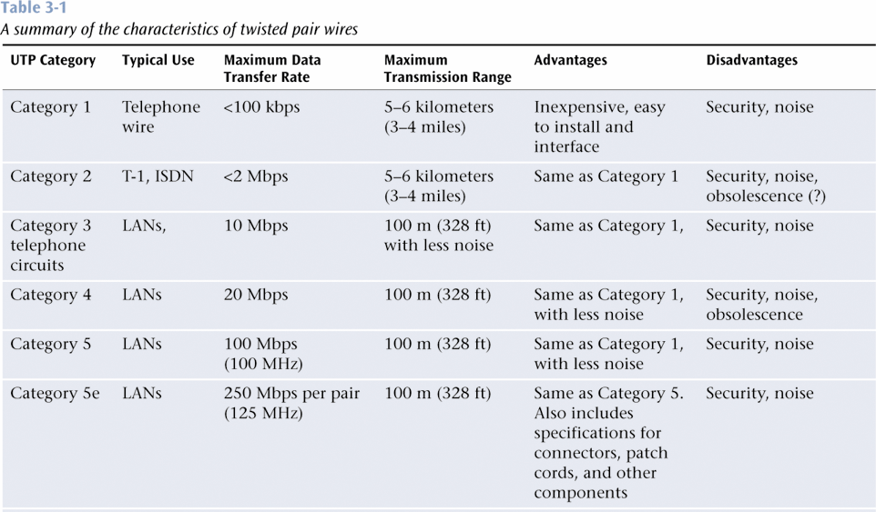

Media are fundamental to tranmsitting signals. Note: do not only rely on the book for an answer. Consult LinkedIn Learning and Wikipedia, among other available resources.
(25) 1. What is the medium needed for the transmission of radio waves that are used in wireless communication?
(25) 2. Why is fiber-optic cable immune to electromagnetic interference?
(25) 3. What are the WiMAX protocols used for?
List three possible application areas of Bluetooth (25) 4. Application 1: (25) 5. Application 2: (25) 6. Application 3:
Table 3-1 below shows Category 1 wire transmitting a signal for 5-6 kilometers (3-4 miles) but Category 5e for only 100 meters (328 feet). (25) 7. Does this mean Category 1 is the best wire for long-distance data transmissions? Briefly explain. 
Assume your company has two offices located approximately one mile apart. Data needs to be transferred between the offices at speeds up to 100Mbps. Develop three possible solutions for interconnecting the two buildings. Comment on the feasibility of each-technical, financial, political/legal.
Create an Excel spreadsheet that lists at least one issue in each category for each potential solution
(75) 8. Save your file 'InterconnectionIssues.xlsx' to the ' ' folder.
(25) 9. Given that a satellite signal travels at the speed of light, how long does it take for a signal to go from Earth to a GEO satellite and back to Earth? Show your calculations, with units.
(25) 10. Why do cellular telephone systems need only seven sets of frequencies in a metropolitan area?
(50) 11. What is one potentially serious problem with using your personal digital assistant and Bluetooth to unlock doors wirelessly? Explain.
Assume you are the technology guru for an interstate trucking company. You need to maintain constant contact with your fleet of trucks. (25) 12.Which wireless technologies will enable you to do this? Assume you are sitting at your desk at work, using your laptop computer. The boss calls an emergency meeting for you and several coworkers and asks everyone to bring his or her laptop computer. When you get to the meeting room, the boss wants to download an important file from his laptop to all your coworker's laptops. Think about how to solve this problem, develop three different solutions. (25) 13. List a possible media solution that will support this download, along with an advantage and disadvantage. (25) 14. List a second possible media solution that will support this download, along with an advantage and disadvantage. (25) 15. List a third possible media solution that will support this download, along with an advantage and disadvantage.
(50) 16. Using the Internet or the library determine the typical height of a terrestial microwave tower. If the tower's height is increased by 10 meters, how much farther will the tower be able to transmit? Show your calculations. Note: the typical height will vary depending on your information source. What is important is assessing the effect of height on signal transmission distance. Ref: http://www.rand.org/pubs/research_memoranda/RM3762/RM3762.chap5.html
Use a web browser to verify that you have published your website to https://classes.winona.edu/... Check that your name, StarID, email, class, semester, section and all of your answers are correct and visible. From the menu choose File>Print... and using "Microsoft Print to PDF" save a copy of this assignment as a .pdf file in your ' ' folder.
(50) 17. Save your file 'WebPage.pdf' to the ' ' folder.
Create one .pdf (portable document format) file from the screen shots that you have taken by following these steps.
(50) 18. Save your file 'ScreenShots.pdf' in your ' ' folder.
Use PDFill to merge the WebPage.pdf file with the ScreenShots.pdf file, and save it as 'Summative03.pdf' in your ' ' folder.
(50) 19. Upload your file 'Summative03.pdf' to the D2L 'Summative03' Assignment folder.
Use a browser to view your completed and published website at: https://classes.winona.edu/... Ensure that you have linked this assignment on your home page. Note that your screen shots do not have to be completed to perform this step.